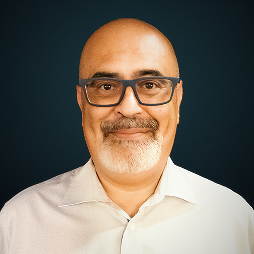

EN
Victor Luz
Especialista em software, sistemas, armazenamento e
proteção de dados, multidisciplinar

Mais de 26 anos de experiência em serviços
profissionais de software, sistemas, armazenamento,
SAN, backup, proteção de dados, recuperação após
desastre, desenho de soluções, arquitetura de sistemas,
e mais recentemente, ML do ponto de vista pratico.
Desenvolvi conhecimentos especializados em soluções de
escala pan-europeia, alta, média e pequena. Na
maior parte, sistemas especializados e construidos à
medida. As minhas competências abrangem
transformação, arquitetura, conceção, implementação,
operação, suporte e formação.
Tenho certificação ITIL, conhecimentos de sistemas
operativos, virtualização, armazenamento, processos,
planeamento, recuperação após desastre, desempenho,
gestão de capacidade, gestão de projetos.
As minhas fortes capacidades de resolução de problemas,
o meu espírito analítico e a minha vasta
experiência fazem de mim uma mais-valia em qualquer
ambiente de TI.
Entusiasta de soluções de código aberto, automação de
serviço, ML/IA e Python.
Experiência
Freelancer:
Engenheiro de Sistemas,
Armazenamento e
Virtualização
2012 - Presente
- Contratos por projeto
para sistemas de pequena
e média dimensão,
armazenamento, cópias de
segurança e soluções
de virtualização a todos
os níveis. Na maior
parte, soluções
construidas à medida.
- Apoio ao cliente 24x7,
incluindo apoio remoto
imediato.
- Clientes de vários
sectores, incluindo
xSPs, telecomunicações,
serviços financeiros,
banca, serviços online,
administração local,
comércio e indústria.
- Formação em vários
formatos.
CPC.is:
Engenheiro de sistemas
sénior
Lisboa, Portugal, Maio de
2011 - Dezembro de 2011
- Reintegrou a equipa de
engenharia da CPC,
divisão de sistemas de
informação.
- Orientou e formou
membros da equipa,
implementou projetos de
clientes e prestou apoio
aos clientes.
- Trabalhou com
UNIX/Windows, VMware,
HP, Microsoft, Symantec
e soluções de código
aberto.
Banco
Central Europeu:
Especialista Sénior em
Sistemas
Frankfurt, Alemanha,
Abril de 2010 - Dezembro
de 2010
- Forneceu suporte de
engenharia para
plataformas de sistemas,
virtualização, bases de
dados, backup,
armazenamento, sistemas
europeus de comutação de
dados. Suporte a
soluções de recuperação
após desastres, UNIX,
Windows, Oracle e a
plataforma EXDI. Suporte
a bancos centrais
incluindo o banco de
Portugal.
- Colaborou com o sistema
Darwin ao nível europeu
e com a plataforma
informática de elevado
desempenho para
divisão de estatísticas
do BCE incluindo as
primeiras experiências
em ML moderno, a um
nível experimental.
Atos
Origin: Especialista sénior
em DR de
armazenamento
Birmingham, Reino Unido,
Setembro de 2009 -
Novembro de 2009
- Expansão da recuperação
após desastres do
Government Gateway para
um novo conjunto de
servidores de
aplicações.
Formação das equipas de
Engenharia e Business as
Usual em soluções de
consistência de dados e
resolução de
problemas de desempenho.
Atos
Origin: Especialista Sénior
em Armazenamento
Beeston, Reino Unido,
Março de 2007 - Julho de
2009
- Integrou a equipa de
armazenamento para
fornecer arquitetura,
conceção, implementação
e suporte para
armazenamento e cópia de
segurança do Ministério
da Justiça Inglês.
- Concebeu e implementou
uma solução de
transferência de dados
verificada, processos
auditáveis, segura e
encriptada para os dados
sensíveis do Ministério
da Justiça.
- Trabalhou em vários
projetos, incluindo a
recuperação de desastres
do Government Gateway, a
atualização do
armazenamento da NHS
Scotland e o projeto
ACCA.
EDS
- Rolls-Royce: Especialista
em Infraestruturas
e Sistemas
Derby, Reino Unido, Abril
de 2006 - Fevereiro de
2007
- Integrou a recém-formada
equipa de projeto
TREDSS/DWP para concluir
o trabalho de
arquitetura empresarial,
conceber soluções de
hardware e sistemas
operativos
Windows/VMware e
realizar trabalhos de
engenharia em
Windows/VMware e
ferramentas (tooling).
- Colaborou na conceção e
engenharia de projetos
da ENI UK e da
Rolls-Royce, incluindo a
arquitetura e conceção
do
maior cluster virtual da
Europa na altura.
CPC.is:
Engenheiro de Sistemas
Sénior
Lisboa, Portugal, 2004 -
Abril de 2006
- Convidado para iniciar
uma nova área de
soluções de
Armazenamento e Backup,
com responsabilidades
que incluem
gestão de equipas e
projetos, implementação
de projetos, conceção,
instalação e
configuração de soluções
UNIX/Windows e apoio ao
cliente 24x7.
- Geriu grupos de
implementação e de
soluções especiais,
trabalhando com clientes
da administração local e
central
e dos sectores da saúde.
WhatEverNet:
Especialista em sistemas EMC
Lisboa, Portugal, 2001 -
2004
- Juntou-se a uma equipa
para iniciar um novo
Parceiro Comercial EMC,
com responsabilidades
que incluíam a
conceção de soluções
EMC, apoio pré-venda,
implementação de
soluções e apoio ao
cliente em permanência.
- Trabalhou com clientes
de vários sectores,
incluindo ISP, telcos,
bancos, serviços
financeiros,
administração
central e local,
serviços secretos e
polícia científica,
Estado, indústria
transformadora,
indústria pesada e
MPE.
EMC
Portuguesa: Suporte a
sistemas abertos
Lisboa, Portugal, 1999 -
2001
- Auxiliou na integração
do Mainframe do cliente,
UNIX e outros sistemas
abertos com as soluções
de armazenamento
EMC Symmetrix e
CLARiiON.
- Prestou apoio 24 horas
por dia, 7 dias por
semana, ao sistema
operativo dos clientes
de Portugal e Espanha, à
recuperação de desastres
e às aplicações, bem
como apoio ocasional de
pré-venda.
Novabase
SD: Consultor e Programador
Lisboa, Portugal, 1998 -
1999
Nota: Primeiro contacto com
ML e estatística no formato
de desenvolvimento de
solução de árvore de decisão
não
linear para banca.
InetD:
Proprietário, programador e
tecnólogo
Barreiro, Portugal, 1998
- 2000
ELAPP:
Engenharia industrial
Palmela, Portugal, 1998
SERRA:
Engenharia Industrial
Palmela, Portugal, 1996 -
1998
Educação
- Aluno do Instituto
Militar dos Pupilos do
Exército do primeiro até
ao 12º.
- Licenciatura em
Eletrónica Industrial
(EEC Nível IV) e
especialização em
automação industrial,
Siemens/ANFEI.
- Exame Europeu Nível IV
Alemão passado com nota
muito positiva.
- Vários cursos EMC, HP,
Solaris,
Fujitsu-Siemens, VMware,
NetApp, HDS, IBM, etc.
Certificações
- Certificação ITIL
- Engenheiro de Sistemas
Certificado pela
Microsoft (MCSE) com
especializações em
Segurança e Mensagens
- Microsoft Certified
Systems Administrator
(MCSA) com
especializações em
Segurança e Mensagens
Microsoft
Certified Professional
(MCP)
- CompTIA Linux+,
Security+, Network+,
Server+ e A+ Sun/Oracle,
Solaris
- Hardware UNIX da
Fujitsu-Siemens
- Veritas Volume Manager e
Filesystem Legato
Competências
Línguas
- Português (nativo)
- Inglês (fluente)
- Várias soluções ao longo
dos anos, incluindo mas
não restrito a IBM, EMC,
NetApp, HDS, Brocade,
McData e
Inrange, bem como
Netbackup, ARCserve, EMC
Networker, Puredisk,
CommVault e processos de
desduplicação de tapes.
- Vasta experiência com
soluções por exemplo
Microsoft, software
aberto, Cisco,
SUN/Oracle, HP, Apple,
Quantum
StorNextFX2, VMware,
Solaris, HP-UX e
Fujitsu-Siemens.
- Proficiente em
linguagens de
programação como Python,
C/C++, .NET Maui,
xTMLASP/PHP, Perl, Java,
e JavaScript.
Competente com FastAPI.
- Dentro de Python,
conhecimento de todos os
tipos de soluções.
- Conhecimentos em
segurança informática,
criptografia e
engenharia inversa.
Outros
- Segurança autorizada:
Reino Unido (BC) e
Agências Europeias.
- Outras certificações
disponíveis.
- Experiência em formação.